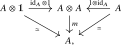
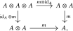
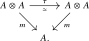

The notions of algebras and modules make sense in every symmetric monoidal \(\infty \)-category. We first recall some examples of symmetric monoidal structures, and then state the coherent algebra package from Part II that we will use throughout the chapter.
Definition 8.1.1. A symmetric monoidal \(\infty \)-category is defined to be a commutative monoid in \(\Cat _{\infty }\). In particular, it is an \(\infty \)-category \(C\) which comes equipped with a tensor product functor \[ - \otimes - \colon C \times C \to C \] and a monoidal unit \(\unit \in C\), and the tensor product is coherently unital, associative and commutative. We will often denote symmetric monoidal \(\infty \)-categories as \((C,\otimes ,\unit )\), or often also just as \(C\). Given symmetric monoidal \(\infty \)-categories \(C\) and \(D\), a symmetric monoidal functor \(F\colon C \to D\) is a morphism in \(\CMon (\Cat _{\infty })\). We write \(\Map ^{\otimes }(C,D)\) for the hom anima in \(\CMon (\Cat _{\infty })\).
We write \(\Fun ^{\otimes }(C,D)\) for the \(\infty \)-category of symmetric monoidal functors and monoidal natural transformations. We will also use the more flexible notion of a lax symmetric monoidal functor \(F\colon C \to D\). Concretely, such a functor is equipped with coherent structure maps \[ \unit _D\longrightarrow F(\unit _C), \qquad F(X)\otimes F(Y)\longrightarrow F(X\otimes Y) \] compatible with the unit, associativity and symmetry. A lax symmetric monoidal functor is symmetric monoidal precisely when these structure maps are isomorphisms. We denote the \(\infty \)-category of lax symmetric monoidal functors by \(\Fun ^{\otimes \text {-lax}}(C,D)\). The formal constructions of these functor categories are given in Definition 14.2.3, Definition 14.3.1.
Example 8.1.2. The following are examples of symmetric monoidal \(\infty \)-categories:
- (1)
-
If \(C\) is an \(\infty \)-category and \(D\) is symmetric monoidal, then \(\Fun (C,D)\) admits the pointwise symmetric monoidal structure, with tensor product and unit computed pointwise.
- (2)
-
An \(\infty \)-category \(C\) with finite products admits the cartesian monoidal structure \((C,\times ,*)\). Dually, finite coproducts give the cocartesian monoidal structure \((C,\amalg ,\emptyset )\). These structures are constructed in Section 15.3, Section 15.2.
- (3)
-
Let \((C,\otimes ,\unit )\) be a symmetric monoidal \(\infty \)-category and let \(D\subseteq C\) be a full subcategory which contains the monoidal unit and is closed under tensor products. Then \(D\) inherits a symmetric monoidal structure for which the inclusion \(D\hookrightarrow C\) is symmetric monoidal. See Lemma 14.5.2 for the construction.
- (4)
-
If \(C\) and \(D\) are symmetric monoidal, \(C\) is small, and \(D\) is cocomplete with tensor product preserving colimits in both variables, then \(\Fun (C,D)\) also admits the Day convolution symmetric monoidal structure. We refer to Chapter 16, especially Proposition 16.2.7, Corollary 16.2.8, for its universal property and construction.
- (5)
-
The \(\infty \)-category \(\Sp \) of spectra admits a symmetric monoidal structure \(\otimes \) satisfying the property that for every spectrum \(X\), the functor \(X \otimes -\colon \Sp \to \Sp \) preserves colimits. Furthermore, \(\Sp \) is universal with this structure: if \(D\) is another symmetric monoidal stable \(\infty \)-category which admits colimits and in which the tensor product preserves colimits in both variables, then the \(\infty \)-category of colimit-preserving symmetric monoidal functors \(\Sp \to D\) is contractible. We construct the symmetric monoidal structure in Chapter 16, and discuss its universal property in Section 18.5.
- (6)
-
The \(\infty \)-categories \(\An _*\), \(\CMon (\An )\) and \(\CGrp (\An )\) similarly admit universal symmetric monoidal structures for pointed, semiadditive, and additive \(\infty \)-categories. In particular, the functors \[ \An \xrightarrow {(-)_+} \An _* \to \CMon (\An ) \xrightarrow {(-)^{\grp }} \CGrp (\An ) \xhookrightarrow {\bB ^{\infty }} \Sp \] are colimit-preserving and symmetric monoidal; see Proposition 16.6.4.
- (7)
-
Let \(R\) be a commutative ring. Then the derived \(\infty \)-category of \(R\), defined as the localization \[ \D (R) := \Ch (R)[\{\text {quasi-isomorphisms}\}^{-1}] \] of the category of chain complexes of \(R\)-modules at the quasi-isomorphisms, admits a symmetric monoidal structure \((\D (R),\otimes ,R[0])\) whose monoidal unit is the chain complex \(R[0]\) given by putting \(R\) in degree \(0\). The tensor product corresponds to the derived tensor product of chain complexes. A construction of this symmetric monoidal structure is given in Section 20.2.
- (8)
-
Recall the full subcategory \(\Cat _1 \subseteq \Cat _{\infty }\) from Example 1.8.14(2) spanned by the 1-categories. A commutative monoid in \(\Cat _1\) is precisely that of a symmetric monoidal category as defined classically. Since the inclusion \(\Cat _1 \hookrightarrow \Cat _{\infty }\) preserves products, this implies that any symmetric monoidal category defines a symmetric monoidal \(\infty \)-category.
Recall from classical algebra that a commutative algebra in a symmetric monoidal category \(C\) is an object \(A\) of \(C\) that comes equipped with a unit \(1\colon \unit \to A\) and a multiplication map \(m\colon A \otimes A \to A\) such that the following diagrams commute:



In an \(\infty \)-category, these three relations are only the beginning: one must also specify coherent higher homotopies between them. The following definition packages all these coherences at once.
Definition 8.1.3 (Commutative algebra). Let \((C,\otimes ,\unit )\) be a symmetric monoidal \(\infty \)-category. We define a commutative algebra in \(C\) to be a symmetric monoidal functor \[ A \colon \Fin \to C, \] where we equip the category \(\Fin \) of finite sets with the cocartesian monoidal structure; this functor packages the coherent \(n\)-fold multiplications described below. We refer to the object \(A(*)\) in \(C\) as the underlying object of \(A\). We will frequently abuse notation and simply write \(A\) for \(A(*)\).
We define the \(\infty \)-category of commutative algebras in \(C\) as \[ \CAlg (C) \quad := \quad \Fun ^{\otimes }(\Fin ,C). \]
Remark 8.1.4. For the cartesian monoidal structure on an \(\infty \)-category \(C\) with finite products, commutative algebras are precisely commutative monoids: \(\CAlg (C,\times )\simeq \CMon (C)\) by Corollary 15.3.13.
Since every finite set is a disjoint union of one-point sets, a commutative algebra supplies coherent \(n\)-fold multiplication maps \[ A^{\otimes n}\longrightarrow A \] for all \(n\geq 0\). The unit, associativity, and commutativity displayed above are part of this structure, together with all higher compatibility data.
There are analogous coherent notions of associative algebras and of modules. We collect the part of their theory needed in this chapter.
Proposition 8.1.5 (Coherent algebra package). Let \(C\) be a cocomplete symmetric monoidal \(\infty \)-category whose tensor product preserves colimits separately in both variables.
- (1)
-
There are \(\infty \)-categories \(\Alg (C)\) and \(\CAlg (C)\) of associative and commutative algebras in \(C\). Their objects have underlying objects of \(C\) equipped with coherently unital and associative multiplication maps; for commutative algebras the multiplication is coherently commutative as well.
- (2)
-
For every \(A\in \Alg (C)\) there are \(\infty \)-categories \(\LMod _A(C)\) and \(\RMod _A(C)\) of left and right \(A\)-modules. The forgetful functors to \(C\) create every limit admitted by \(C\) and all colimits, and the free left \(A\)-module on \(X\in C\) has underlying object \(A\otimes X\). If \(C\) is stable, then \(\LMod _A(C)\) and \(\RMod _A(C)\) are stable.
- (3)
-
There is a relative tensor product \[ -\otimes _A-\colon \RMod _A(C)\times \LMod _A(C)\longrightarrow C, \] which preserves colimits separately in both variables. It is unital: for every left \(A\)-module \(M\) and right \(A\)-module \(N\) there are natural isomorphisms \[ A\otimes _A M\iso M, \qquad N\otimes _A A\iso N. \]
- (4)
-
Every morphism \(f\colon A\to B\) in \(\Alg (C)\) induces a restriction functor \[ f_*\colon \LMod _B(C)\longrightarrow \LMod _A(C), \] which admits the extension-of-scalars functor \[ f^*:=B\otimes _A-\colon \LMod _A(C)\longrightarrow \LMod _B(C) \] as a left adjoint. There is an analogous adjunction for right modules, whose left adjoint is \(-\otimes _A B\).
- (5)
-
If \(R\in \CAlg (C)\), then left and right \(R\)-modules agree, and the resulting \(\infty \)-category \(\Mod _R(C)\) is symmetric monoidal under \(-\otimes _R-\). There are natural equivalences \[ \CAlg (\Mod _R(C))\simeq \CAlg (C)_{R/}. \]
- (6)
-
Lax symmetric monoidal functors preserve algebra objects and their modules. In particular, a symmetric monoidal adjunction \(F\colon C\rightleftarrows D\noloc G\) induces adjunctions on algebras and on their module categories. If \(A\in \Alg (C)\) and the unit \(A\to GF(A)\) is an isomorphism, this gives an adjunction \[ \LMod _A(C)\rightleftarrows \LMod _{F(A)}(D) \] whose underlying functors are induced by \(F\) and \(G\). Right adjoints of symmetric monoidal functors are canonically lax symmetric monoidal.
- (7)
-
If \(C\) is presentable, then \(\LMod _A(C)\) and \(\RMod _A(C)\) are presentable for every \(A\in \Alg (C)\).
Proof. These statements are discussed in more detail in Part II and Chapter 22. See Section 19.1, Corollary 19.1.17, Section 19.2, Proposition 19.2.12, Theorem 19.2.14, Proposition 19.2.15, Proposition 14.3.6, Proposition 22.5.5. □
Definition 8.1.6 (Ring spectra and modules). An associative ring spectrum is an associative algebra in \((\Sp ,\otimes ,\S )\), and a commutative ring spectrum is a commutative algebra in \(\Sp \). Every algebra \(A\) is canonically a left and right module over itself via its multiplication \(A\otimes A\to A\); this is called the regular \(A\)-module. We write \[ \Alg :=\Alg (\Sp ), \qquad \CAlg :=\CAlg (\Sp ) \] for their \(\infty \)-categories. For an associative ring spectrum \(R\), we abbreviate \[ \LMod _R:=\LMod _R(\Sp ), \qquad \RMod _R:=\RMod _R(\Sp ). \] If \(R\) is commutative, we write \(\Mod _R:=\Mod _R(\Sp )\) for its symmetric monoidal \(\infty \)-category of modules.
Unless commutativity is specified, a ring spectrum will mean an associative ring spectrum.
The regular module generates an important finiteness class.
Definition 8.1.7 (Perfect module). Let \(R\) be an associative ring spectrum. We denote by \[ \Perf (R) \subseteq \LMod _R \] the smallest thick subcategory containing the regular left \(R\)-module \(R\), where a subcategory is called thick if it is stable and closed under retracts. A left \(R\)-module is called perfect if it belongs to \(\Perf (R)\).
Thus a perfect module is obtained from finitely many shifts of \(R\) by iterating finite cofiber sequences and retracts. The compact-generation results from Chapter 22 identify this intrinsic finite construction with compactness.
Lemma 8.1.8 (Perfect modules and compact objects, [Lurie (2017), Proposition 7.2.4.2]). Let \(R\) be an associative ring spectrum.
- (1)
-
The regular left \(R\)-module \(R\) is compact.
- (2)
-
The \(\infty \)-category \(\LMod _R\) is compactly generated by \(R\).
- (3)
-
A left \(R\)-module is perfect if and only if it is compact.
Proof. The functor \(\Hom _{\LMod _R}(R,-)\) is naturally isomorphic to the composite \[ \LMod _R \xrightarrow {\fgt } \Sp \xrightarrow {\Omega ^\infty } \An , \] which preserves filtered colimits. Thus \(R\) is compact. Its shifts jointly detect isomorphisms, since \[ \pi _n(M) \cong \pi _0\Hom _{\LMod _R}(R[n],M). \] Hence \(R\) is a compact generator of \(\LMod _R\). The characterization of compact objects in a compactly generated stable \(\infty \)-category from Proposition 22.3.4 now identifies the compact objects with the thick subcategory generated by \(R\), which is \(\Perf (R)\). □
Generated from the authoritative LaTeX source.